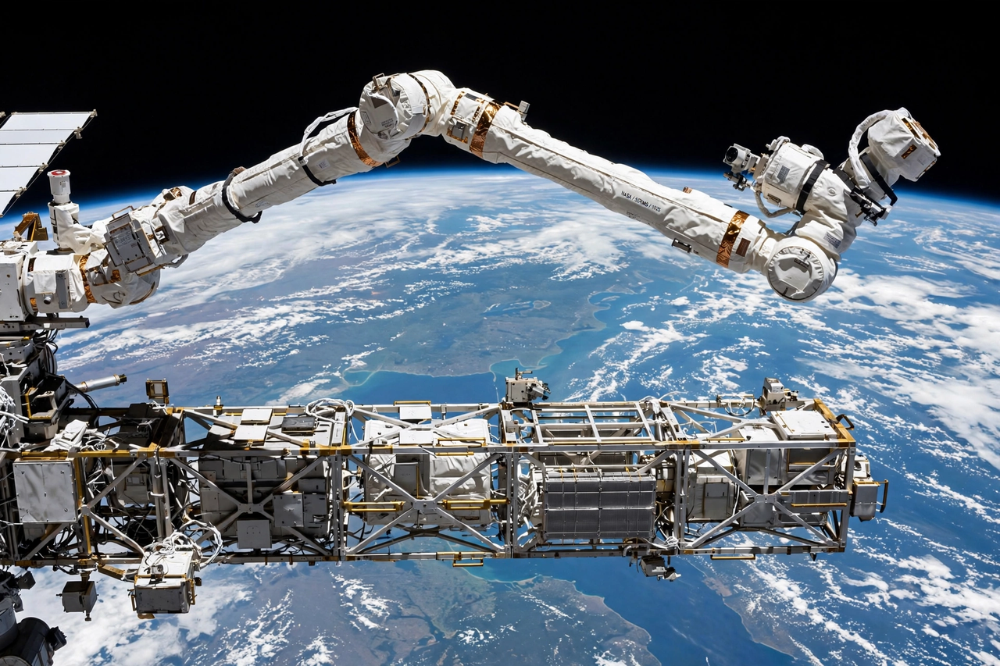

Canadarm2
From Wikipedia, the free encyclopedia
| Canadarm2 | |
|---|---|
| Full name | Mobile Servicing System / Space Station Remote Manipulator System |
| Builder | MDA (Canada) |
| Installed | April 2001 (STS-100) |
| Length | 17.6 m |

Canadarm2 at work.Canadarm2, formally the Space Station Remote Manipulator System, is the 17.6-metre robotic arm of the International Space Station — Canada's signature contribution to the station, following the original Canadarm that flew on the Space Shuttle. Installed in 2001 by a crew including Chris Hadfield on his spacewalk, it can move end-over-end across the station's exterior like an inchworm, grappling modules, visiting spacecraft and spacewalking astronauts.
Canadarm2 assembles and maintains the station: it relocated modules and solar arrays during construction, catches free-flying cargo ships (Dragon, Cygnus, HTV) that cannot dock themselves, and carries astronauts on its end during repairs. Its smaller sibling, the two-armed Dextre robot, performs fine work so crews need not go outside.
Legacy and succession
The arm's red Canada wordmark became a national icon — it appears on the Canadian five-dollar bill. Canada is contributing the next generation, Canadarm3, to the Lunar Gateway, a smaller, AI-capable arm designed to maintain the lunar station during the long periods when no crew is aboard.
See also
International Space Station · Chris Hadfield · Kibo (ISS module) · Lunar Gateway